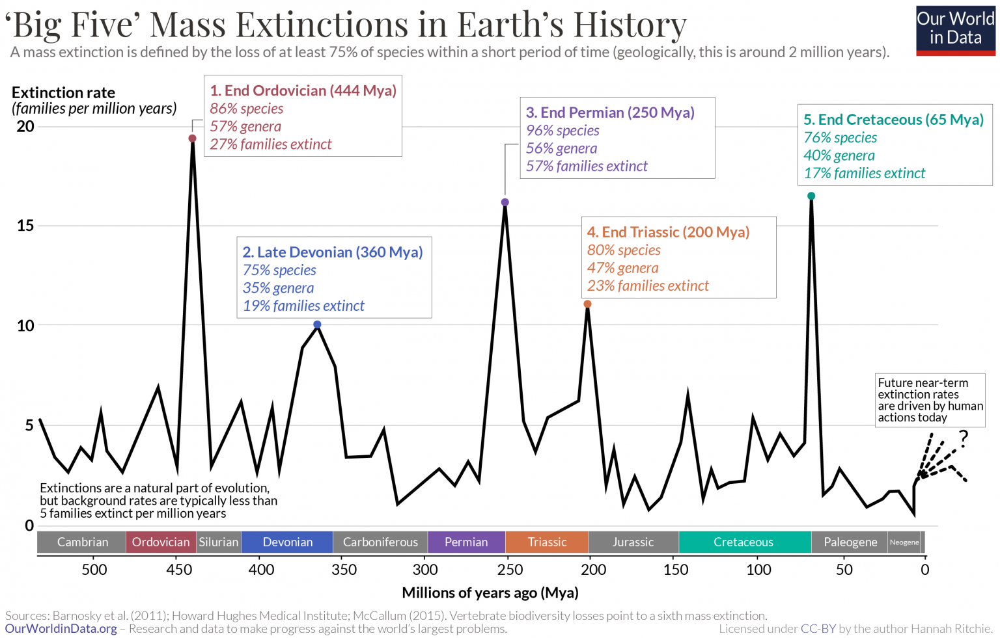
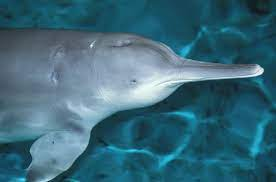
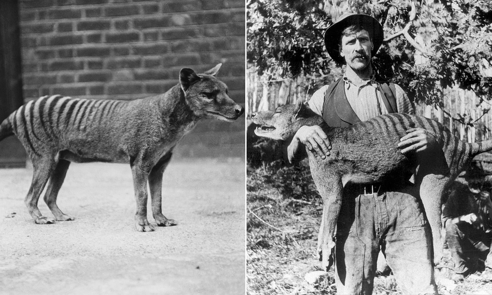
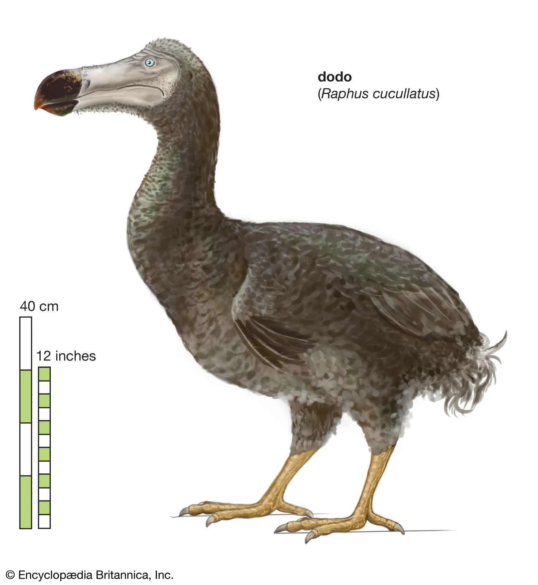
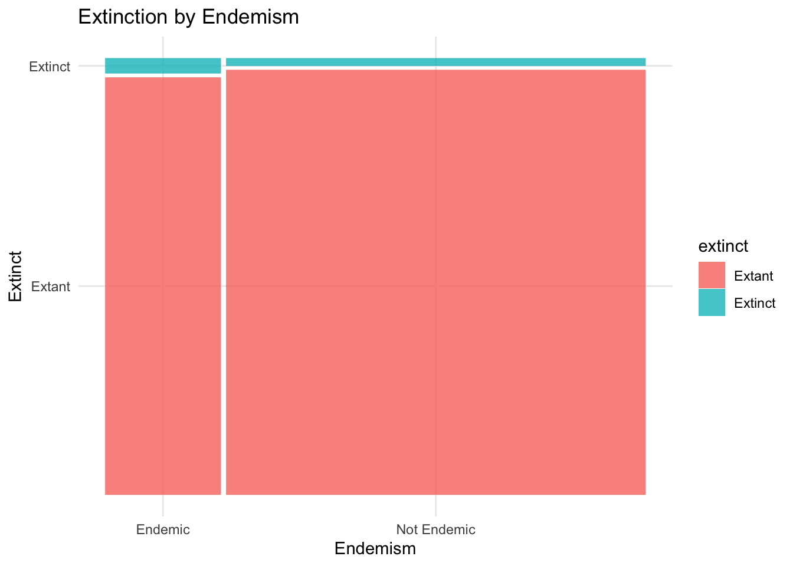
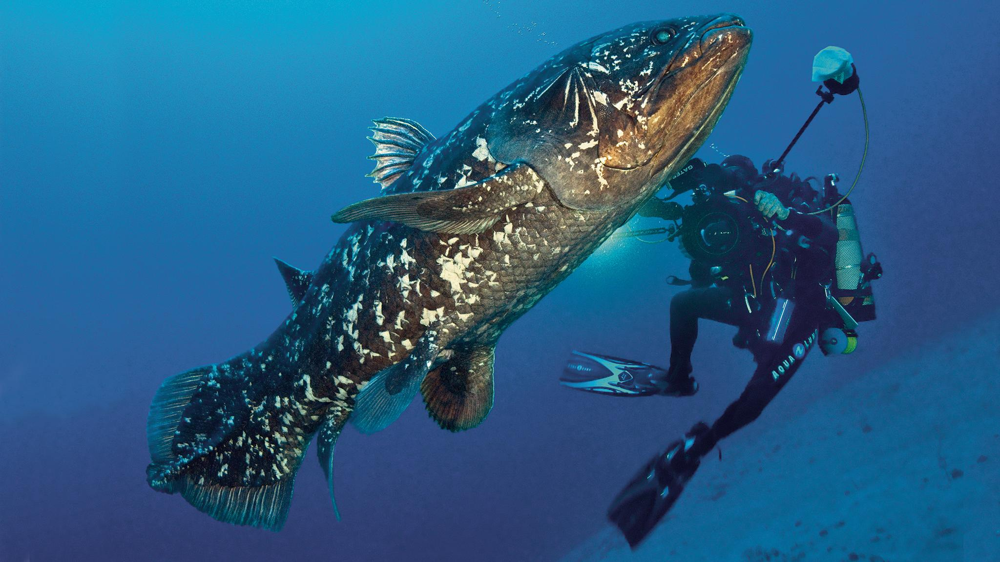

Exploring Species Extinction
Introduction and Motivation
History of Extinction
Species extinction is a normal part of Earth’s natural history, as over 99.9% of species to ever have existed on Earth have gone extinct1. Background extinction rates under normal conditions is expected to between 0.1 - 1 species of vertebrates to go extinct every 100 years per 10,000 species2. However, throughout Earth’s history there have been calamitous events such as asteroid impacts, volcanic eruptions, and sudden atmospheric changes that have rapidly changed the conditions on Earth to be unsuitable for life. The worst of these extinction events, the Permian extinction, is thought to have killed off 90% of all species on Earth.
The current species extinction rate is estimated to be between 1,000 and 10,000 times higher than the normal background extinction rate3, which is enough to consider our current time period the 6th mass extinction event - due to various human activities.

Extinction Today
You may be familiar with some of the species that have recently gone extinct due to human activity. Among these are the Chinese River dolphin, which lived in the Yangtze river of China and was last seen in 2007 - thought to be driven to extinction due to heavy use of the river for fishing, transportation and hydroelectricity.

The Tasmanian Tiger which lived on Tasmania, a small island south east of Australia, was hunted to extinction in the 1930s

And the famous Dodo bird, endemic to the island of Mauritius, it lacked adaptations to prevent its own extinction from hunting by sailors and habitat destruction.

Why Study Extinction?
We care about this because species provide us not only with important sources of medicine, food, and other various products, but also play important roles in each of their respective ecosystems on which much of our societies depend. Each species also helps us elucidate the story of life’s history on Earth and contextualizes our place on Earth and our relationship with the natural world. More importantly however, species have intrinsic value regardless of what they provide for humans, and each one lost is a tragedy in its own right.
Its important to understand what the factors are that render species vulnerable to extinction, as well as what the mechanisms of extinction are and how they work. Extinction is notoriously difficult to study for reasons I will discuss in the issues section, but we can hopefully use some of these findings to identify which species’ may be more or less vulnerable and better protect them and their ecosystems from extinction and collapse.
Data
For this analysis, I used data from the IUCN redlist of threatened species4 to investigate some of the factors that I suspected may influence extinction. For simplicitly, I will only be focusing on species within the kingdom Animalia. Below is a map I used to explore some of the characteristics of extinct species mainly out of curiosity, but I believe that it contextualizes our data a little bit better and is worth exploring.
Cleaning
After cleaning the data, each row represented one species with a unique assessment I.D, and each column contained a variable that I thought might influence extinction. The variables that I focused on were: species endemism, habitat type, the type of threat faced, human use, and taxonomy.
head(predictors_2)# A tibble: 6 × 14
asses…¹ habitat threat use count…² count…³ count…⁴ phylum class order family
<dbl> <fct> <fct> <fct> <fct> <fct> <fct> <fct> <fct> <fct> <fct>
1 495907 Wetlan… Biolo… Food… KH MM TH CHORD… REPT… TEST… GEOEM…
2 497499 Wetlan… Natur… <NA> MX <NA> <NA> CHORD… ACTI… CYPR… GOODE…
3 497550 Forest Biolo… <NA> PW <NA> <NA> MOLLU… GAST… ARCH… DIPLO…
4 499158 Forest Biolo… Medi… ID <NA> <NA> CHORD… REPT… TEST… TESTU…
5 499618 Wetlan… Pollu… Food… BD IN BT CHORD… REPT… TEST… GEOEM…
6 500479 Forest Energ… <NA> PW <NA> <NA> MOLLU… GAST… LITT… ASSIM…
# … with 3 more variables: genus <fct>, extinct <fct>, endemic <fct>, and
# abbreviated variable names ¹assessment_id, ²country_1, ³country_2,
# ⁴country_3Modeling
I ran a logistic linear regression on each of these variables individually to try and predict extinct (1) or extant (0) - to investigate which categories in each variable were more highly associated with extinction. I then made a more general logistic regression using each of these variables as predictors. Comparing the coefficients of the variables from their individual models to their coefficients from the big model, I was able evaluate the robustness of each variable.
Our logistic regression uses the following logit function: \[\operatorname{logit}(p)=\log \left(\frac{p}{1-p}\right)=\beta_0+\beta_1 x + \varepsilon \]
Where \(\beta_0\) is our intercept, and \(\beta_1\) is the coefficient for a two-level factor variable that toggles on when we are not evaluating our reference category. We will use this expression for each of our variables, and the only thing that will change is the number of \(\beta\). For a variable with \(i\) levels, we will have \(i - 1\) values of \(\beta\)
I then used a stepwise function to sequentially add variables to see which combination of variables do best at predicting species extinction.
Endemism
I first investigated endemism - a species endemic to Santa Barbra means it is found nowhere else in the world outside of Santa Barbara. This seemed like a good place to start, since an endemic species is geographically and genetically restricted to one location which seems like it would make it much more prone to extinction than a more dispersed species. Below is a mosaic plot to see if there is an obvious correlation.

Here is the R output for the model summary:
summary(endemism)
Call:
glm(formula = extinct ~ endemic, family = "binomial", data = predictors_2)
Deviance Residuals:
Min 1Q Median 3Q Max
-0.2663 -0.1873 -0.1873 -0.1873 2.8468
Coefficients:
Estimate Std. Error z value Pr(>|z|)
(Intercept) -4.03475 0.03264 -123.62 <2e-16 ***
endemicYes 0.71317 0.05506 12.95 <2e-16 ***
---
Signif. codes: 0 '***' 0.001 '**' 0.01 '*' 0.05 '.' 0.1 ' ' 1
(Dispersion parameter for binomial family taken to be 1)
Null deviance: 14362 on 70066 degrees of freedom
Residual deviance: 14207 on 70065 degrees of freedom
AIC: 14211
Number of Fisher Scoring iterations: 6Since our p-value is far below any of the conventional significance levels, it looks like endemism on its own is significant in predicting extinction.
The coefficients don’t tell us much since we’re using a logistic regression, and we need our output in the form
After some rearranging, we get an expression that we can use to calculate how much more likely an endemic species is to be extinct than a non-endemic species. We will use this approach for each of our variables. \[\hat p = \frac{e^{\beta_0 + \beta_1 x}}{1+ e^{\beta_0 + \beta_1 x}}\]
So we have to do a bit of manipulation to make this coefficient interpretable. We’re going to calculate the right hand side of our equation above for endemic species (x = 1 since its a categorical variable), and non-endemic species (x = 0). We will use this approach for each of our significant levels.
Our results show that an endemic species is 1.75% more likely to be extinct than a species which isn’t endemic.
Habitat
I then investigated the type of habitat the species lives in. Running a logistic regression model only on habitat shows that the Cave habitat (our reference group, when x = 0) is significant - with a minimal p-value.
Wetlands and Forest habitats are also significant at a 0.05 significance level, and Marine Neritic habitats are significant at a significance level of 0.01. Let’s turn the coefficients into something more interpretable as we did above.
summary(habitat)
Call:
glm(formula = extinct ~ habitat, family = "binomial", data = predictors_2)
Deviance Residuals:
Min 1Q Median 3Q Max
-0.2236 -0.2236 -0.2049 -0.1697 3.5882
Coefficients:
Estimate Std. Error z value Pr(>|z|)
(Intercept) -4.8462 0.5020 -9.654 < 2e-16 ***
habitatDesert 0.8790 0.5804 1.514 0.12991
habitatForest 0.9932 0.5036 1.972 0.04859 *
habitatGrassland 0.3767 0.5356 0.703 0.48185
habitatMarine Neritic -1.5899 0.5736 -2.772 0.00558 **
habitatRocky Areas -0.2026 0.5795 -0.350 0.72659
habitatSavanna -1.1071 0.7090 -1.562 0.11839
habitatShrubland 0.6132 0.5175 1.185 0.23607
habitatWetlands 1.1697 0.5041 2.321 0.02031 *
---
Signif. codes: 0 '***' 0.001 '**' 0.01 '*' 0.05 '.' 0.1 ' ' 1
(Dispersion parameter for binomial family taken to be 1)
Null deviance: 12283 on 68394 degrees of freedom
Residual deviance: 11954 on 68386 degrees of freedom
(1672 observations deleted due to missingness)
AIC: 11972
Number of Fisher Scoring iterations: 9Summarizing our significant results in comparison to the reference group:
Species living in a Cave/Subterranean habitat have a 0.78% chance of also being extinct.
Species living in a Marine Neritic habitat have 0.619% LESS of a chance of being extinct than species living in a Cave/Subterranean habitat.
Species living in a Forest habitat have a 1.3% MORE of a chance of being extinct than species living in a Cave/Subterranean habitat.
Species living in a Wetlands habitat have a 1.69% MORE of a chance of being extinct than species living in a Cave/Subterranean habitat.
Threat
Next was the type of threat that the species faces. Running another logistic regression model on this showed that threat types of Agriculture and Aquaculture, Pollution and Invasive species/Diseases are significant.
summary(threat)
Call:
glm(formula = extinct ~ threat, family = "binomial", data = predictors_2)
Deviance Residuals:
Min 1Q Median 3Q Max
-0.4658 -0.2419 -0.2071 -0.1811 3.0029
Coefficients:
Estimate Std. Error z value
(Intercept) -3.83204 0.07183 -53.347
threatBiological resource use -0.27072 0.11192 -2.419
threatEnergy production and Mining -0.66555 0.23604 -2.820
threatHuman intrusions and disturbance -0.04396 0.28927 -0.152
threatInvasive species, genes and disease 1.66562 0.09326 17.859
threatNatural system modifications 0.31543 0.12560 2.511
threatPollution 0.43810 0.10936 4.006
threatResidential and Commercial Development 0.10644 0.11445 0.930
threatTransportation and service corridors -0.59745 0.34292 -1.742
Pr(>|z|)
(Intercept) < 2e-16 ***
threatBiological resource use 0.01557 *
threatEnergy production and Mining 0.00481 **
threatHuman intrusions and disturbance 0.87922
threatInvasive species, genes and disease < 2e-16 ***
threatNatural system modifications 0.01203 *
threatPollution 6.17e-05 ***
threatResidential and Commercial Development 0.35237
threatTransportation and service corridors 0.08147 .
---
Signif. codes: 0 '***' 0.001 '**' 0.01 '*' 0.05 '.' 0.1 ' ' 1
(Dispersion parameter for binomial family taken to be 1)
Null deviance: 9735.2 on 37632 degrees of freedom
Residual deviance: 9245.2 on 37624 degrees of freedom
(32434 observations deleted due to missingness)
AIC: 9263.2
Number of Fisher Scoring iterations: 7Again, summarizing our significant results compared to the reference group:
Species threatened by Agriculture/Aquaculture have a 2.12% chance of also being extinct
Species threatened by Invasive species/Disease have a 8.16% more chance of being extinct than species threatened by Agriculture/Aquaculture
Species threatened by Pollution have a 1.1% more chance of being extinct than species threatened by Agriculture/Aquaculture
Use
Use seemed like another appropriate variable to investigate. Perhaps species that provide medicinal or energy uses are extracted at more unsustainable rates than a species that provides an artisinal use.
summary(use)
Call:
glm(formula = extinct ~ use, family = "binomial", data = predictors_2)
Deviance Residuals:
Min 1Q Median 3Q Max
-0.5780 -0.2048 -0.0794 -0.0794 3.4074
Coefficients:
Estimate Std. Error z value Pr(>|z|)
(Intercept) -1.857e+01 3.261e+03 -0.006 0.995
useex - situ production 1.383e+01 3.261e+03 0.004 0.997
usefibre -7.093e-06 5.649e+03 0.000 1.000
useFood - animal -7.093e-06 3.282e+03 0.000 1.000
useFood - human 1.471e+01 3.261e+03 0.005 0.996
usefuels -7.093e-06 3.558e+03 0.000 1.000
usehandicrafts, jewellery, etc 1.401e+01 3.261e+03 0.004 0.997
useManufacturing chemicals -7.091e-06 4.376e+03 0.000 1.000
useMedicine 1.393e+01 3.261e+03 0.004 0.997
useother 1.478e+01 3.261e+03 0.005 0.996
useother chemicals 1.686e+01 3.261e+03 0.005 0.996
useOther household goods -7.098e-06 3.513e+03 0.000 1.000
usePets, display animals, horticulture 1.281e+01 3.261e+03 0.004 0.997
usePoisons -7.093e-06 4.612e+03 0.000 1.000
useResearch 1.501e+01 3.261e+03 0.005 0.996
usesport hunting/Specimen collecting 1.276e+01 3.261e+03 0.004 0.997
useunknown -7.093e-06 3.312e+03 0.000 1.000
usewearing apparel, accessories 1.456e+01 3.261e+03 0.004 0.996
(Dispersion parameter for binomial family taken to be 1)
Null deviance: 2258.6 on 19132 degrees of freedom
Residual deviance: 2106.8 on 19115 degrees of freedom
(50934 observations deleted due to missingness)
AIC: 2142.8
Number of Fisher Scoring iterations: 17This shows that the human use for each species is not significant for predicting extinction. A potential problem with this though, is the amount of missing data in this column.
predictors_2 |>
filter(is.na(use)) |>
count()# A tibble: 1 × 1
n
<int>
1 50934Out of our over 70,000 species observations, approximately 51,000 of these do not have associated use cases. This may be because we simply don’t have a human use for many species, or that the uses just aren’t properly documented.
Taxonomy
Taxonomy seemed like another interesting variable to investigate. It seems likely that more closely-related species will face similar extinction pressures. Since we’re working within the Animalia Kingdom, we will run a logistic regression using the class of each species.
summary(taxa)
Call:
glm(formula = extinct ~ class, family = "binomial", data = predictors_2)
Deviance Residuals:
Min 1Q Median 3Q Max
-1.0108 -0.2139 -0.1767 -0.1553 3.4241
Coefficients:
Estimate Std. Error z value Pr(>|z|)
(Intercept) -4.41151 0.06767 -65.187 < 2e-16 ***
classAMPHIBIA 0.95113 0.10048 9.466 < 2e-16 ***
classANTHOZOA -1.44785 0.71134 -2.035 0.041812 *
classARACHNIDA 1.96338 0.20198 9.721 < 2e-16 ***
classASTEROIDEA -12.15456 2399.54472 -0.005 0.995958
classAVES 0.33808 0.10024 3.373 0.000744 ***
classBIVALVIA 1.86306 0.16589 11.231 < 2e-16 ***
classBRANCHIOPODA -12.15456 353.79357 -0.034 0.972594
classCEPHALASPIDOMORPHI 1.60815 0.73136 2.199 0.027888 *
classCEPHALOPODA -12.15456 131.89092 -0.092 0.926574
classCHILOPODA 2.90743 0.78466 3.705 0.000211 ***
classCHONDRICHTHYES -1.44452 0.58212 -2.481 0.013084 *
classCLITELLATA 1.51192 0.42476 3.559 0.000372 ***
classCOLLEMBOLA 3.31290 0.81930 4.044 5.26e-05 ***
classDIPLOPODA 1.07930 0.39056 2.763 0.005719 **
classENOPLA 4.00604 0.91538 4.376 1.21e-05 ***
classGASTROPODA 1.84916 0.08471 21.830 < 2e-16 ***
classHEXANAUPLIA 0.91500 1.01729 0.899 0.368414
classHOLOTHUROIDEA -12.15456 212.92517 -0.057 0.954479
classHYDROZOA 1.84656 1.03995 1.776 0.075796 .
classINSECTA 0.25934 0.10879 2.384 0.017129 *
classMALACOSTRACA 0.13538 0.20875 0.649 0.516651
classMAMMALIA 0.64491 0.11576 5.571 2.53e-08 ***
classMAXILLOPODA 0.44122 1.01166 0.436 0.662740
classMEROSTOMATA -12.15456 1696.73434 -0.007 0.994284
classMYXINI -12.15456 353.79357 -0.034 0.972594
classOSTRACODA 2.70676 0.77168 3.508 0.000452 ***
classPOLYCHAETA -12.15456 2399.54472 -0.005 0.995958
classPOLYPLACOPHORA -12.15456 1696.73434 -0.007 0.994284
classREPTILIA -0.23966 0.12997 -1.844 0.065181 .
classSARCOPTERYGII -12.15456 906.94266 -0.013 0.989307
classTURBELLARIA 20.97758 2399.54472 0.009 0.993025
classUDEONYCHOPHORA -12.15456 758.80267 -0.016 0.987220
classSOLENOGASTRES -12.15456 1199.77236 -0.010 0.991917
classECHINOIDEA -12.15456 2399.54472 -0.005 0.995958
classMONOPLACOPHORA -12.15456 2399.54472 -0.005 0.995958
---
Signif. codes: 0 '***' 0.001 '**' 0.01 '*' 0.05 '.' 0.1 ' ' 1
(Dispersion parameter for binomial family taken to be 1)
Null deviance: 14362 on 70066 degrees of freedom
Residual deviance: 13505 on 70031 degrees of freedom
AIC: 13577
Number of Fisher Scoring iterations: 15There are quite a few classes that look to be significant here. Especially significant classes appear to be, Actinopterygii (Ray-finned fishes, our reference group) Amphibians, Anthozoans, Arachnids, Aves, Bivalves, and Gastropods. We will keep an eye on these classes of organisms as we build our larger model.
Species within the Actinopterygii class have a 1.2% chance of being extinct
Species within the Anthozoa class have a 0.91% LESS of a chance of being extinct than Actinopterygii
Species within the Amphibian class have a 1.84% MORE of a chance of being extinct than Actinopterygii
Species within the Arachnid class have a 6.76% MORE of a chance of being extinct than Actinopterygii
Species within the Aves class have a 0.474% MORE of a chance of being extinct than Actinopterygii
Species within the Bivalve class have a 6.05% MORE of a chance of being extinct than Actinopterygii
Species within the Gastropod class have a 5.96% MORE of a chance of being extinct than Actinopterygii
Stepwise Model
Now, we want to see if any of these significant levels of previous variables hold up when we start to add our variables together for a more complete model. We start with predicting extinction off of one variable, endemism, and then incrementally add our other variables of interest. We use a stepwise AIC function - which will take a look at each step, and output scores for each step of the model, indicating which model does the best job at predicting extinction.
#Defining each step we want to put in our final model
step1 <- glm(extinct~endemic, family = 'binomial',data = predictors_2)
step2 <- glm(extinct~endemic + habitat, family = 'binomial',data = predictors_2)
step3 <- glm(extinct~endemic + habitat + threat, family = 'binomial',data = predictors_2)
step4 <- glm(extinct~endemic + habitat + threat + class, family = 'binomial',data = predictors_2)
step5 <- glm(extinct~endemic + habitat + threat + class + use, family = 'binomial',data = predictors_2)Warning: glm.fit: fitted probabilities numerically 0 or 1 occurredmodels <- list(step1, step2, step3, step4, step5)
names <- c('endemic', 'endemic_habitat', 'endemic_habitat_threat', 'endemic_habitat_threat_class', 'endemic_habitat_threat_class_use')
aictab(cand.set = models, modnames = names)
Model selection based on AICc:
K AICc Delta_AICc AICcWt Cum.Wt LL
endemic_habitat_threat_class_use 56 1615.00 0.00 1 1 -751.22
endemic_habitat_threat_class 47 8794.14 7179.14 0 1 -4350.01
endemic_habitat_threat 18 8985.03 7370.03 0 1 -4474.51
endemic_habitat 10 11713.72 10098.72 0 1 -5846.86
endemic 2 14210.91 12595.91 0 1 -7103.45The last step in our model has the lowest AIC score, and appears to be the best. This is slightly worrying, since it is the most complicated model - it uses 56 different parameters (1 for each level of each variable) to predict extinction. This could potentially indicate over-fitting, so we’re going to take a look at our coefficients and significance levels of our variable levels, to see which levels remain robust.
summary(step5)
Call:
glm(formula = extinct ~ endemic + habitat + threat + class +
use, family = "binomial", data = predictors_2)
Deviance Residuals:
Min 1Q Median 3Q Max
-1.4760 -0.1578 -0.0847 -0.0398 4.0991
Coefficients:
Estimate Std. Error z value
(Intercept) -3.579e+01 9.841e+03 -0.004
endemicYes 1.434e+00 1.537e-01 9.332
habitatDesert 3.609e-01 3.566e+03 0.000
habitatForest 1.518e+01 3.026e+03 0.005
habitatGrassland 1.597e+01 3.026e+03 0.005
habitatMarine Neritic 1.387e+01 3.026e+03 0.005
habitatRocky Areas 3.291e-01 3.340e+03 0.000
habitatSavanna 1.486e+01 3.026e+03 0.005
habitatShrubland 1.524e+01 3.026e+03 0.005
habitatWetlands 1.616e+01 3.026e+03 0.005
threatBiological resource use 7.515e-01 2.987e-01 2.516
threatEnergy production and Mining -2.139e-01 6.497e-01 -0.329
threatHuman intrusions and disturbance -2.899e-01 1.051e+00 -0.276
threatInvasive species, genes and disease 1.378e+00 3.411e-01 4.039
threatNatural system modifications 7.381e-01 4.006e-01 1.842
threatPollution 1.888e+00 3.118e-01 6.057
threatResidential and Commercial Development -8.599e-02 4.504e-01 -0.191
threatTransportation and service corridors -2.892e-01 1.052e+00 -0.275
classAMPHIBIA 7.919e-01 3.380e-01 2.343
classANTHOZOA -1.363e+01 7.744e+02 -0.018
classARACHNIDA -1.517e+01 3.164e+03 -0.005
classASTEROIDEA -1.589e+01 1.773e+04 -0.001
classAVES 2.117e+00 2.741e-01 7.723
classBIVALVIA -1.304e-01 6.396e-01 -0.204
classCEPHALASPIDOMORPHI -1.672e+01 1.214e+04 -0.001
classCEPHALOPODA -1.507e+01 2.172e+03 -0.007
classCHONDRICHTHYES -9.949e-01 1.047e+00 -0.950
classCLITELLATA 2.564e+01 1.773e+04 0.001
classDIPLOPODA -1.289e+01 1.022e+04 -0.001
classGASTROPODA -1.204e+00 1.034e+00 -1.164
classHOLOTHUROIDEA -1.442e+01 3.129e+03 -0.005
classHYDROZOA 2.759e+00 1.397e+00 1.974
classINSECTA -1.497e+01 1.252e+03 -0.012
classMALACOSTRACA -1.649e+01 1.236e+03 -0.013
classMAMMALIA -3.202e-01 4.598e-01 -0.696
classMEROSTOMATA -1.738e+01 1.191e+04 -0.001
classMYXINI -1.575e+01 8.511e+03 -0.002
classREPTILIA -6.149e-01 5.781e-01 -1.064
classSARCOPTERYGII -1.699e+01 9.950e+03 -0.002
useex - situ production 1.441e+01 9.364e+03 0.002
usefibre -8.449e-01 1.535e+04 0.000
useFood - animal -1.167e+00 9.433e+03 0.000
useFood - human 1.487e+01 9.364e+03 0.002
usefuels -1.387e+00 1.004e+04 0.000
usehandicrafts, jewellery, etc 1.500e+01 9.364e+03 0.002
useManufacturing chemicals 9.118e-02 1.528e+04 0.000
useMedicine 1.461e+01 9.364e+03 0.002
useother 1.561e+01 9.364e+03 0.002
useother chemicals 1.813e+01 9.364e+03 0.002
useOther household goods -2.402e+00 1.021e+04 0.000
usePets, display animals, horticulture 1.306e+01 9.364e+03 0.001
usePoisons -1.609e+00 1.269e+04 0.000
useResearch 1.535e+01 9.364e+03 0.002
usesport hunting/Specimen collecting 1.341e+01 9.364e+03 0.001
useunknown -2.255e+00 9.570e+03 0.000
usewearing apparel, accessories 1.601e+01 9.364e+03 0.002
Pr(>|z|)
(Intercept) 0.9971
endemicYes < 2e-16 ***
habitatDesert 0.9999
habitatForest 0.9960
habitatGrassland 0.9958
habitatMarine Neritic 0.9963
habitatRocky Areas 0.9999
habitatSavanna 0.9961
habitatShrubland 0.9960
habitatWetlands 0.9957
threatBiological resource use 0.0119 *
threatEnergy production and Mining 0.7420
threatHuman intrusions and disturbance 0.7827
threatInvasive species, genes and disease 5.36e-05 ***
threatNatural system modifications 0.0654 .
threatPollution 1.38e-09 ***
threatResidential and Commercial Development 0.8486
threatTransportation and service corridors 0.7833
classAMPHIBIA 0.0192 *
classANTHOZOA 0.9860
classARACHNIDA 0.9962
classASTEROIDEA 0.9993
classAVES 1.13e-14 ***
classBIVALVIA 0.8385
classCEPHALASPIDOMORPHI 0.9989
classCEPHALOPODA 0.9945
classCHONDRICHTHYES 0.3422
classCLITELLATA 0.9988
classDIPLOPODA 0.9990
classGASTROPODA 0.2445
classHOLOTHUROIDEA 0.9963
classHYDROZOA 0.0484 *
classINSECTA 0.9905
classMALACOSTRACA 0.9894
classMAMMALIA 0.4862
classMEROSTOMATA 0.9988
classMYXINI 0.9985
classREPTILIA 0.2875
classSARCOPTERYGII 0.9986
useex - situ production 0.9988
usefibre 1.0000
useFood - animal 0.9999
useFood - human 0.9987
usefuels 0.9999
usehandicrafts, jewellery, etc 0.9987
useManufacturing chemicals 1.0000
useMedicine 0.9988
useother 0.9987
useother chemicals 0.9985
useOther household goods 0.9998
usePets, display animals, horticulture 0.9989
usePoisons 0.9999
useResearch 0.9987
usesport hunting/Specimen collecting 0.9989
useunknown 0.9998
usewearing apparel, accessories 0.9986
---
Signif. codes: 0 '***' 0.001 '**' 0.01 '*' 0.05 '.' 0.1 ' ' 1
(Dispersion parameter for binomial family taken to be 1)
Null deviance: 2012.7 on 11602 degrees of freedom
Residual deviance: 1502.4 on 11547 degrees of freedom
(58464 observations deleted due to missingness)
AIC: 1614.4
Number of Fisher Scoring iterations: 19The coefficient for endemism changed from 0.7 ~ 1.5, noticeable, but not enough to cause concern. Especially since its significance level remains far below any conventional significance threshold, we can remain confident that Endemic species are indeed more likely to be extinct. This is a robust indicator.
Similarly, threats of Pollution and Invasive Species/diseases remain robust in our more complete model. The significance levels are far below the usual significance thresholds of 0.05 and 0.01, indicating that this is also a robust indicator.
Finally, species in the Aves taxa also look like they’re remaining robust - although to a lesser degree. The significance level decreases quite a bit from when we evaluated taxa on their own, and the coefficient changed from 0.33 to 2.11. This indicates that there may be an interaction effect between taxa and one of the other variables.
Predictions
augmented_mod <- augment(step4, type.predict = 'response') |>
mutate(predictions = .fitted)
t.test(predictions~endemic, data = augmented_mod)
Welch Two Sample t-test
data: predictions by endemic
t = -45.917, df = 13339, p-value < 2.2e-16
alternative hypothesis: true difference in means between group No and group Yes is not equal to 0
95 percent confidence interval:
-0.02218271 -0.02036633
sample estimates:
mean in group No mean in group Yes
0.02210923 0.04338375 Issues
Assumptions
I categorized species that are classified as “extinct in the wild” as extinct, since we are interested in species outside of captivity. I also took a case by case approach to classify some of the critically endangered species with values of the variable “Possibly extinct” as “TRUE” as extinct - since many of these species have not been seen in many years (our chinese river dolphin friend actually falls into this category, it is listed as critically endangered despite not having been seen since 2007) and are widely agreed to be at least functionally extinct (where there are so few members of the species surviving in the wild that it is unlikely they will ever come into contact).
Simplifications
To ensure that each observation was a species and that there werent multiple observations of the same species, I had to categorize each of the sub habitats into one general habitat - ie tropical rainforests in costa rica and boreal forests in siberia are both considered forests, and I also had to collapse species that live in multiple habitats into one habitat. I took similar approaches with the threat type, generalizing each sub type into one general type, collapsing species facing multiple threats into one threat, as well as the use case. Each of these introduces its own oversimplification issues, and should be explored more thoroughly in future investigations
Limitations
On top of all this, it is extremely difficult to study extinction. We don’t have crucial data on population dynamics, geographic range, reproductive capacity, genetic diversity, and many other important factors for many species. In fact, there are probably still millions of species of plants and animals that we have yet to identify, let alone gather enough pertinent data to understand its status. The IUCN has assessed only ~7% of its described species. Even for species that we are aware of, it is very difficult to tell if a species is actually extinct. To illustrate an extreme example of how bad we are at this, we’ll take a look at the Coelecanths.
This genus disappeared from the fossil record 66 million years ago and was presumed to be extinct along with the dinosaurs. In 1938, one species of Coelecanth was rediscovered in a fishing net off the South African Coast. Here it is, a living dinosaur, alive and swimming.

Since then, another Coelecanth species has been rediscovered, and over 100 individual specimens have been recorded. Coelecanths are classified as critically endangered, the IUCN estimates that fewer than 500 exist in the wild, and are suffering as a result of over-fishing. This is one example of a Lazarus taxon - an evolutionary line that disappeared from the fossil record only to reappear much later.
Next Steps
A logical next step to continue this analysis would be to more carefully investigate each variable individually by categorizing them even more broadly. Since we’re testing so many different parameters here, our model is likely to find significance regardless if the effect is actually there or not.
Additionally, it is highly likely that many of these variables are interacting with each other. Meaning that one variable likely influences the outcome, and is correlated with another variable. For example, species more closely related (have similar taxonomy) are probably more likely to share habitats, which will also influence how likely it is that they are extinct. Species that share habitats are also probably more likely to share similar threats - especially in habitats undergoing destruction. To address this, we would add interacting terms (habitat:class, threat:habitat) and take a look at how the coefficients change from model to model again. If we find that the coefficients for any of our variables and our intercept change dramatically, then it is likely that we have an interaction effect.
Another idea to investigate that I suspect plays an important role in species extinction is its ecological niche and trophic level. A specialist species with a narrow ecological niche would likely be much more sensitive to changes in environmental conditions - and is therefore likely more prone to extinction than a generalist species that can fill a variety of niches. Similarly, I suspect that species at low trophic levels are much less likely to go extinct than species at higher trophic levels, because they have lower energy requirements and depend on less of the food chain. In the case of an ecosystem collapse, species at higher trophic levels will likely be the first to die out.
Finally, this analysis only uses data from the Animal kingdom. An analysis incorporating plants, arachaea, fungi, and eubacteria would certainly give us a more full picture of extinction. However given the data that we have available, we are far far away from being able to perform this analysis properly.
Conclusion
Our picture of extinction is far from complete. In fact, our picture of species is far from complete. scientists estimate that there are around 8.7 million species of plants and animals in existence5, yet we’ve only identified 1.2 million. This doesn’t even include lifes kingdoms of which we know the least - the Fungi, Archaea, Protozoa, and Bacteria. Its accepted among scientists that some species among us today will go extinct far before they are discovered. Species will continue to go extinct due to our mistreatment of the natural world - and we will lose far more than simply the services they provide to humans. As of right now, there is no reversing extinction (although this is likely to change).
Despite this bleak reality, we are in a better position to address and mitigate our predicament than we were even just a few decades ago. Our tools to understand the natural world, our policies to safeguard it, and our desire to protect it are becoming more interconnected every day. With better information, we are able to make better decisions to become better stewards of the planet. If one thing is clear, the more we learn about life, the more it surprises us. Despite our ongoing destruction of much of the natural world, life finds a way.
Footnotes
Barnosky, A., Matzke, N., Tomiya, S. et al. Has the Earth’s sixth mass extinction already arrived?. Nature 471, 51–57 (2011). https://doi.org/10.1038/nature09678↩︎
Ceballos G, Ehrlich PR, Barnosky AD, García A, Pringle RM, Palmer TM. Accelerated modern human-induced species losses: Entering the sixth mass extinction. Sci Adv. 2015 Jun 19;1(5):e1400253. doi: 10.1126/sciadv.1400253. PMID: 26601195; PMCID: PMC4640606.↩︎
Barnosky, A., Matzke, N., Tomiya, S. et al. Has the Earth’s sixth mass extinction already arrived?. Nature 471, 51–57 (2011). https://doi.org/10.1038/nature09678↩︎
https://www.iucnredlist.org/search↩︎
Sweetlove, L. Number of species on Earth tagged at 8.7 million. Nature (2011). https://doi.org/10.1038/news.2011.498↩︎